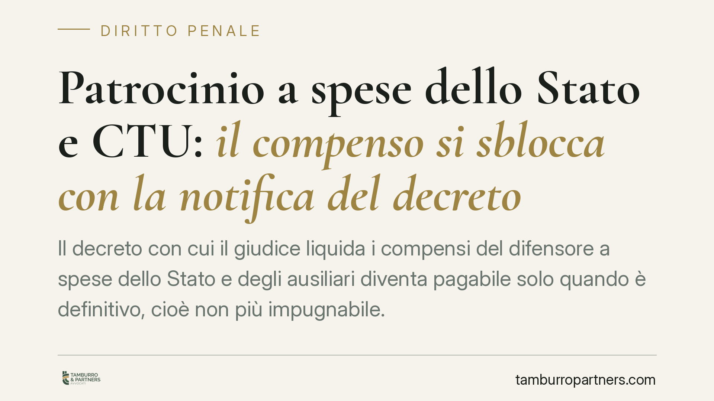

Patrocinio a spese dello Stato e CTU: il compenso si sblocca con la notifica del decreto
Il decreto con cui il giudice liquida i compensi del difensore a spese dello Stato e degli ausiliari diventa pagabile solo quando è definitivo, cioè non più impugnabile. Una pronuncia della Cassazione – di cui si attende riscontro ufficiale – torna sul punto chiave: senza notifica alle parti la definitività può slittare di mesi, con effetti diretti sui tempi di incasso.

Il nodo: definitività e pagamento
Nel patrocinio a spese dello Stato, difensori e ausiliari del giudice (consulenti tecnici, custodi, periti) non ricevono il compenso dal cliente, ma dall'Erario. Il presupposto del pagamento è un decreto di liquidazione che sia diventato definitivo: in termini semplici, un provvedimento che non può più essere contestato con i rimedi di legge.
Finché quel decreto resta impugnabile, la somma non è esigibile. Da qui la questione pratica: da quando decorre il termine per impugnare e, di conseguenza, quando il decreto si consolida.
Su questo tema è intervenuta – secondo quanto riportato – una recente pronuncia della Corte di Cassazione che ribadirebbe il peso della notifica alle parti. Il dato va trattato con cautela: in assenza di riscontro ufficiale su numero e anno della sentenza, lo segnaliamo come informazione da verificare prima di assumerla a base di scelte operative.
Inquadramento normativo
La disciplina è contenuta nel D.P.R. 115/2002 (Testo unico spese di giustizia). L'art. 84 regola la liquidazione in favore del difensore della parte ammessa; gli artt. 168, 170 e 171 disciplinano il compenso degli ausiliari del magistrato e i rimedi contro il decreto.
In particolare, l'art. 170 prevede l'opposizione al decreto di liquidazione. Dopo la riforma del 2011, questo rimedio segue il rito di cui all'art. 15 del D.Lgs. 150/2011 (già procedimento sommario di cognizione, poi confluito nel rito semplificato): il termine per proporre opposizione è di trenta giorni decorrenti, di regola, dalla comunicazione o notificazione del provvedimento.
Il punto delicato riguarda l'ipotesi in cui il decreto non venga notificato né comunicato ad alcuna parte. In tal caso si pone il problema se e come operi un termine "esterno", slegato dalla notifica. Si discute dell'applicabilità del cosiddetto termine lungo di impugnazione – sei mesi dalla pubblicazione del provvedimento ai sensi dell'art. 327 c.p.c. – alla materia delle spese di giustizia. Questa applicabilità non è pacifica e deve trovare fondamento in una specifica pronuncia, non essere data per scontata: è proprio su questo che la sentenza citata assumerebbe rilievo, qualora confermata.
Implicazioni pratiche
Le conseguenze per chi attende il compenso sono concrete.
Se il decreto viene notificato alle parti, il termine di impugnazione decorre da lì e si esaurisce in tempi brevi: trascorsi trenta giorni senza opposizione, il provvedimento si consolida e il pagamento può procedere.
Se invece la notifica manca, la definitività può restare sospesa. Il professionista rischia di dover attendere il più ampio termine esterno – da verificare nella sua effettiva applicabilità – prima che il decreto diventi non più impugnabile. Il risultato è un allungamento dei tempi di incasso che dipende da un adempimento formale, non dal merito della spettanza.
Si tratta di una differenza che pesa soprattutto su custodi e consulenti tecnici, i cui compensi possono restare bloccati a lungo per la sola mancata notifica del decreto.
Cosa fare in concreto
- Verificare lo stato del decreto. Accertare in cancelleria se il provvedimento è stato comunicato o notificato alle parti e in quale data.
- Attivarsi per la notifica quando manca. Se il decreto non risulta notificato, valutare di promuoverne la notifica alle parti interessate per fare decorrere con certezza il termine breve.
- Monitorare i trenta giorni. Annotare la data di decorrenza e verificare l'eventuale proposizione di opposizioni ex art. 170 D.P.R. 115/2002.
- Non assumere automatismi sul termine semestrale. Prima di contare sul decorso dei sei mesi ex art. 327 c.p.c., confermare che quella linea interpretativa sia sostenuta da giurisprudenza aggiornata e verificabile.
- Documentare ogni passaggio. Conservare prova di comunicazioni e notifiche: è su quelle date che si misura la definitività e, quindi, l'esigibilità del compenso.
Per chi opera nel patrocinio a spese dello Stato, la notifica non è un dettaglio burocratico ma il passaggio che determina quando il credito diventa esigibile.
Contributo informativo a cura di Tamburro & Partners – Avv. Giuseppe Tamburro. Non costituisce parere legale.
Ogni condominio ha una storia a sé.
Se gestisci un'amministrazione e vuoi un confronto su una specifica questione condominiale, scrivi allo studio. Ti rispondiamo entro un giorno lavorativo.